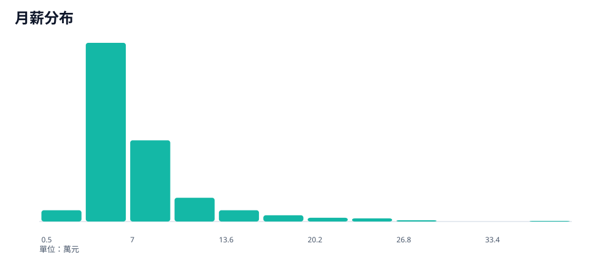
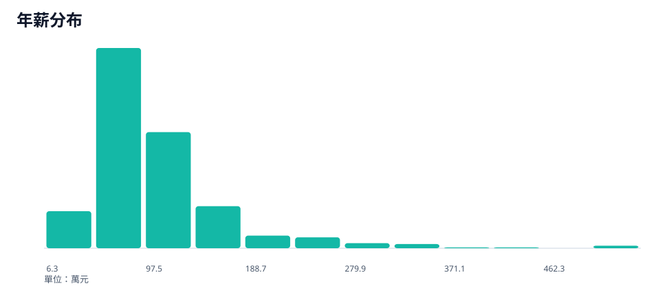
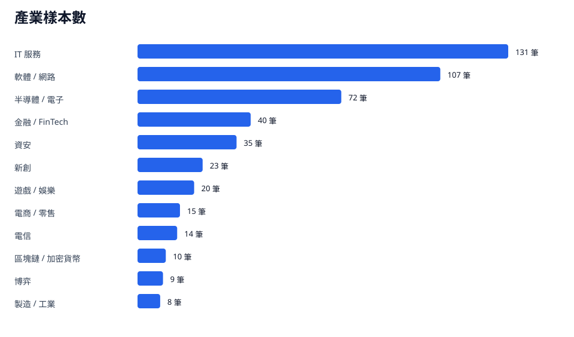
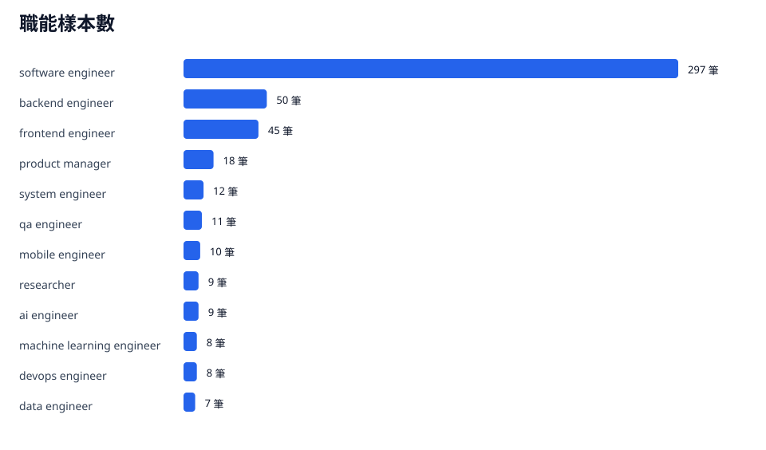

資料來源為 Dcard 上的匿名薪資樣本。本報告觀察台灣軟體工程市場在產業、職能與年資三個面向的薪資分布，協助判讀薪資帶、高薪樣本與成長節點。
分析見解
- 514 筆樣本的月薪中位數為 6.5 萬、年薪中位數為 91 萬；讀者可先用這兩個數字定位自己的市場區間。
- 職能樣本集中在 software engineer，共 297 筆；這個角色是本報告最主要的薪資基準。
- 產業樣本以 IT 服務 131 筆、軟體 / 網路 107 筆、半導體 / 電子 72 筆為主；比較薪資時應先對齊產業，再比較職能與年資。
樣本數514
月薪中位數6.5 萬
年薪中位數91 萬
Bonus 中位數2 個月
怎麼讀這份報告
先用總覽的月薪與年薪中位數定位自己，再進入產業、職能與年資頁拆解差距；若目標是進入高薪區間，最後閱讀高薪樣本與行動建議，把下一步能力投資排進職涯計畫。

單位為萬元；中位數比平均數更適合作為個人薪資定位基準。

年薪以月薪乘上十二個月加 bonus 月數估算；右尾代表高薪樣本集中區。

產業比較先看樣本數；主結論以樣本數達門檻的分類為準。

職能樣本集中在 software engineer；其他職能需搭配表格樣本數判讀。